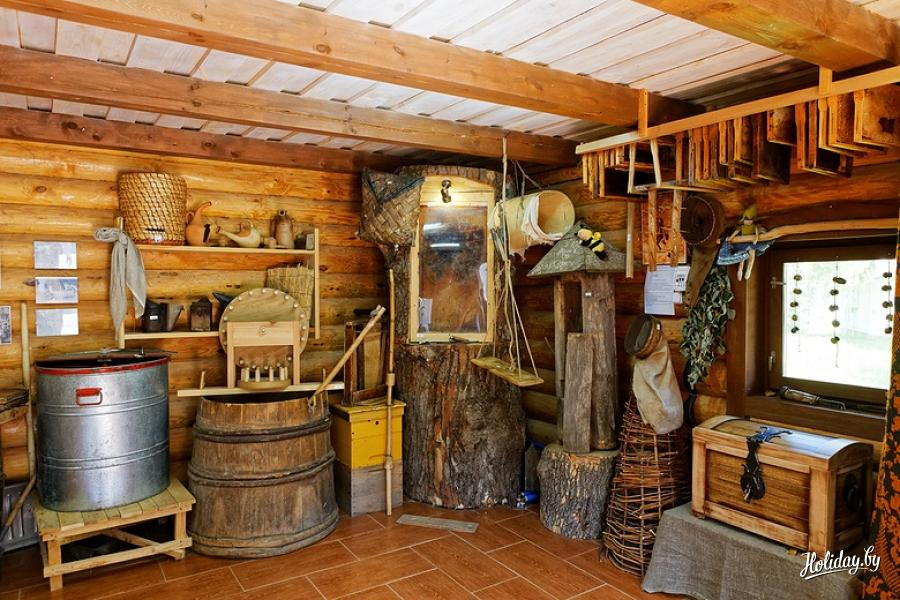
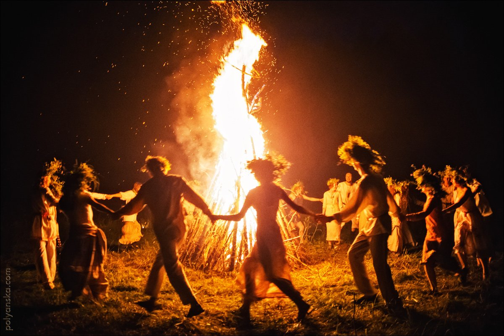
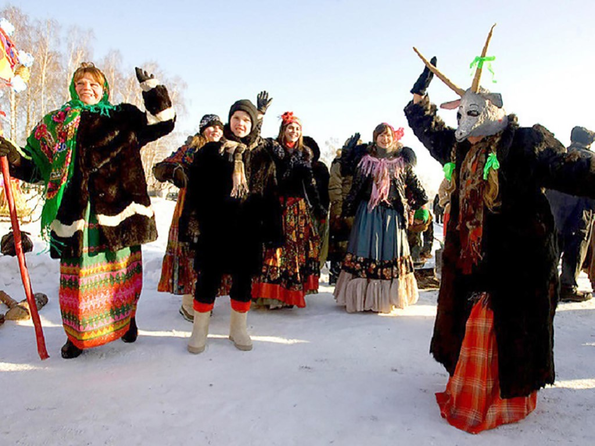

Этнотуризм |
|  | ДудуткиМузейный комплекс народных ремесел Дудутки расположен в 40 км от Минска. Это удивительное место, которое сочетает в себе историю, развлечения и культуру. Полезные советы для туристов! |
|  | КупаллеИван Купала (Иванов день, Купальская ночь) — один из главных праздников календаря славянских народов, совпадающий с Рождеством Иоанна Крестителя. Купальские обряды, совершаемые в канун праздника («ночь накануне Ивана Купалы»), составляют сложный обрядовый комплекс, включающий: сбор трав и цветов, плетение венков, украшение зеленью построек, разжигание костров, уничтожение чучела, перепрыгивание через костер или через букеты зелени, обливание водой, гадания, выслеживание ведьмы, ночные бесчинства. |
|  | КолядыРождество – это светлый праздник второй по значимости после Пасхи для православных верующих.Уже после ужина, ближе к полуночи, молодежь собирается компаниями и ходит по домам. Парни и девушки поют песни – колядки – за что хозяева дают им деньги либо угощения. |